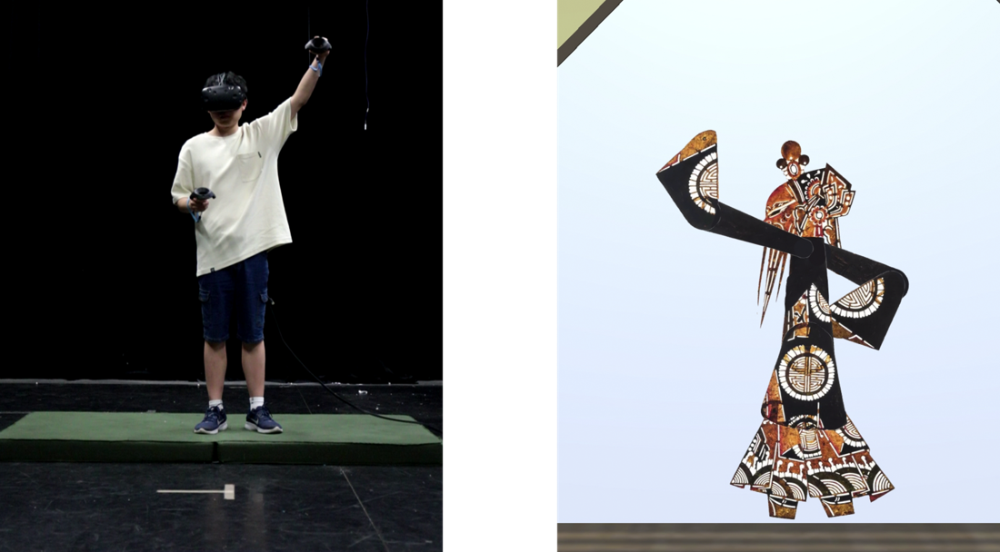
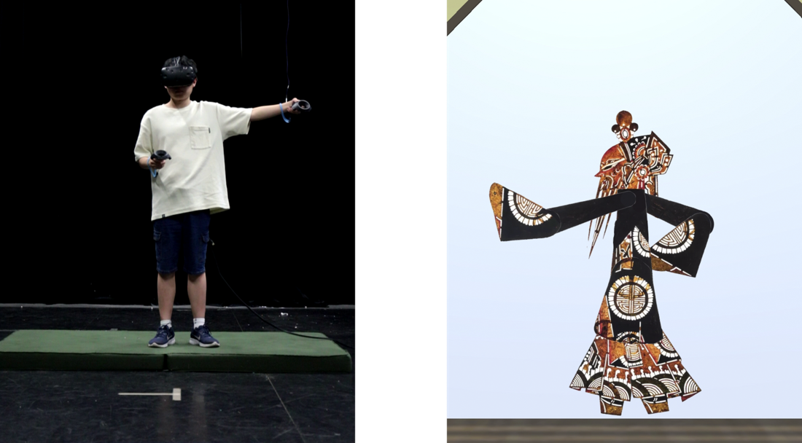
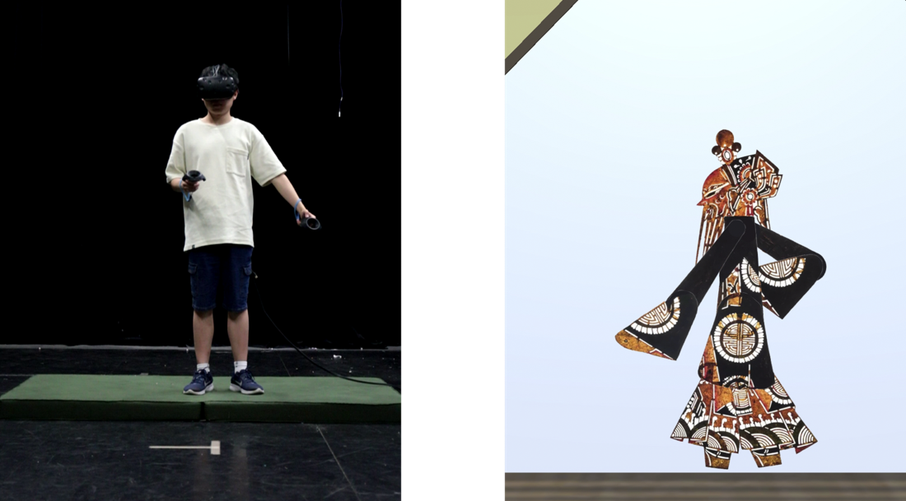
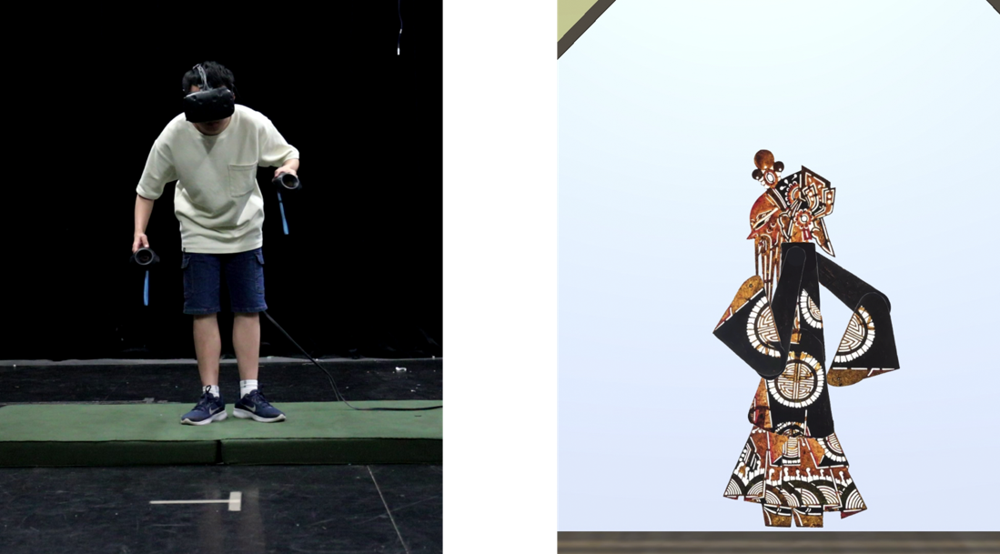
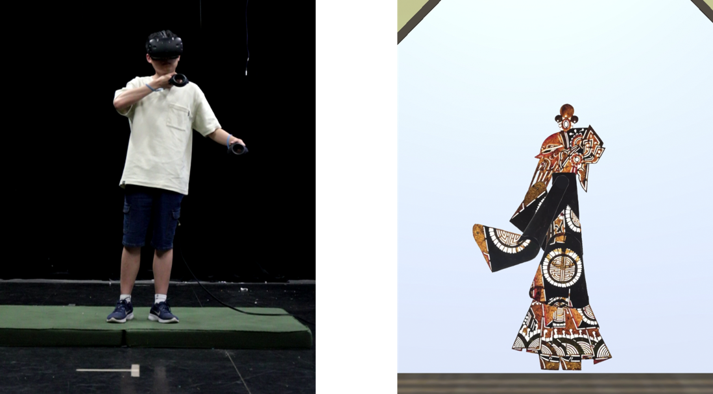
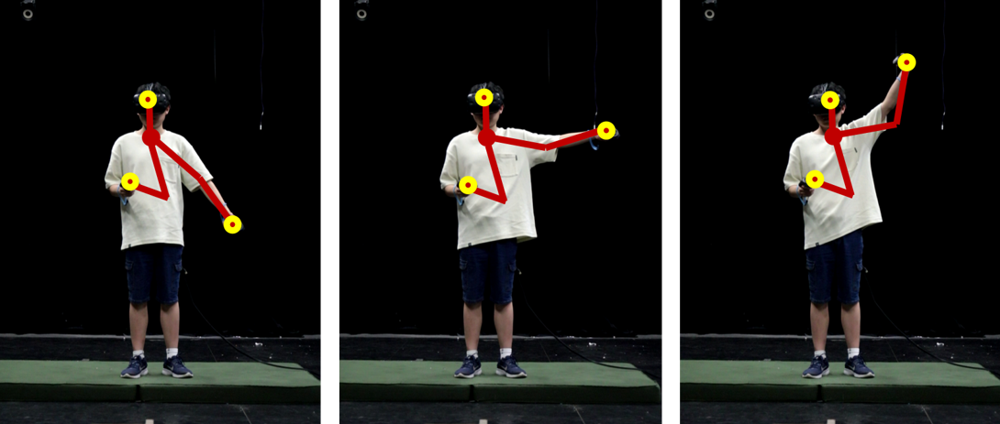

ShadowPlayVR-交互方式设计
ShadowPlayVR-Interaction

ShadowPlayVR-交互方式设计
ShadowPlayVR-Interaction
ShadowPlayVR 利用VR控制器模拟操控皮影戏杆，实现类似传统皮影戏表演艺术的效果。ShadowPlayVR系统提供了独特的视角，将用户置于真实世界中幕后操作的皮影艺人角色，控制木偶进行表演。
ShadowPlayVR uses VR controllers to simulate the manipulation of shadow puppet rods, achieving similar effects to traditional shadow puppetry performance art. The ShadowPlayVR system offers a unique perspective by positioning users in the role of a real-world puppeteer operating behind the scenes, controlling puppets to perform.
为了准确捕捉皮影戏的精髓，ShadowPlayVR融合了真实木偶舞台的结构元素，研究了木偶制作工艺，并采用了该艺术形式典型的艺术风格。至关重要的是，它通过专门设计的具身交互将传统木偶技术与VR控制功能相结合，模拟真实木偶的触觉体验。在ShadowPlayVR体验中，用户使用有限的输入设备控制虚拟木偶，采用类似传统皮影戏中使用的手势和全身动作，从而在虚拟环境中提供沉浸式表演体验。
To accurately capture the essence of shadow puppetry, ShadowPlayVR incorporates the structural elements of real puppetry stages, studies the craftsmanship of puppet making, and adopts the artistic styles typical of the art form. Crucially, it integrates traditional puppetry techniques with VR control features through specially designed embodied interactions that simulate the tactile experience of real puppetry. In the ShadowPlayVR experience, users control virtual puppets using limited input devices, adopting gestures and full-body movements akin to those used in traditional shadow puppetry, thereby offering an immersive performance experience within the virtual environment.
关于皮影戏 About Shadow Play
皮影戏依赖于木偶操控和视觉讲故事，是VR如何将传统艺术实践扩展到数字领域的典范案例。该艺术形式对操控的强调与VR的一般输入方法（控制器）非常相似，使其成为通过交互设计研究VR重现真实生活中传统技能的潜力，并在其中支持艺术实践，吸引多元观众的理想主题。
Shadow play, with its reliance on puppet manipulation and visual storytelling, presents an exemplary case of how VR can extend traditional artistic practices into the digital realm. The art form's emphasis on manipulation closely mirrors the general input method (controllers) to VR, making it an ideal subject for investigating the potential of VR to recreate real life hand-on traditional skills through interaction design and support artistic practice within, engage diverse audiences.
交互设计 Interaction Design
将皮影戏艺术适应虚拟现实系统需要在交互方面进行调整。基于皮影戏工艺的ShadowPlayVR具有两个主要控制特点：多点协调和间接操控。
Adapting the art of shadow puppetry to virtual reality systems requires adjustments in interaction. ShadowPlayVR, based on the craft of shadow puppetry, features two main control characteristics: multi-point coordination and indirect manipulation.
- 多点协调要求皮影艺人同时用杆控制木偶的多个关节，以实现完整的动作。
- 间接操控意味着皮影艺人的手部动作与木偶的动作不直接对应；相反，动作通过控制杆传递以操控木偶。
- Multi-point coordination requires puppeteers to control multiple joints of the puppet simultaneously with rods to achieve complete movements.
- Indirect manipulation means the puppeteer's hand movements do not directly correspond to the puppet's movements; instead, movements are translated through the control rods to manipulate the puppet.
传统皮影木偶的标准控制方法涉及六个关节部分：头部（颈部）控制关节，两个手臂（手腕）控制关节，腰部控制关节，以及两个腿部（脚踝）控制关节。在一些简化的木偶模型中，腰部和腿部控制被省略，由上半身动作驱动下半身。为了使木偶控制更加兼容VR设备架构，VR环境采用了简化的木偶控制方法并进行了调整。它保留了核心的头部和手臂（手腕）控制关节，将腰部和头部关节责任合并为新的身体控制关节，并通过上半身部分的移动实现相对的腿部动作。
The standard control method for traditional shadow puppets involves six joint parts: the head (neck) control joint, two arm (wrist) control joints, a waist control joint, and two leg (ankle) control joints. In some simplified puppet models, the waist and leg controls are omitted, with upper body movements driving the lower body. To make puppet control more compatible with VR device architecture, the VR environment adopts a simplified puppet control approach with adjustments. It retains the core head and arm (wrist) control joints, combines the waist and head joint responsibilities into a new body control joint, and achieves relative leg movements through the movement of the upper body parts.
基于对皮影木偶控制方法的调整，ShadowPlayVR开发了多种专注于关键控制关节的控制方法。通过以下四个关键控制，建立了一种基本的、渐进的控制方法，允许进行皮影木偶表演（按难度和直观性列出）：
Based on the adjustments to the shadow puppet control methods, ShadowPlayVR has developed multiple control methods focused on key control joints. Through the following four key controls, a basic, gradient control method is established that allows for shadow puppet performance (listed by difficulty and intuitiveness):
- 头部控制 Head Control（简单，直观，直接控制）：木偶的头部角度由用户的视角决定。
- 身体移动控制 Body Movement Control（简单，直观，直接控制）：当面对木偶时，木偶与控制器向左右移动的方向相同。
- 手部控制 Hand Control（高级，间接控制）：控制器面向屏幕，控制器在屏幕上指向的点是木偶的相应控制点。
- Head Control (Simple, intuitive, direct control): The puppet's head angle is determined by the user's viewing angle.
- Body Movement Control (Simple, intuitive, direct control): When facing the puppet, the puppet moves in the same left and right direction as the controller.
- Hand Control (Advanced, indirect control): The controller faces the screen, and the point where the controller faces on the screen is the corresponding control point for the puppet.
演示-手部控制 Demo-HandControl





- 身体翻转控制 Body Flipping Control（高级，间接控制）：控制器必须交叉手，导致手中两个控制器之间的距离超过一定值，之后木偶执行镜像翻转
- Body Flipping Control (Advanced, indirect control): The controller must cross hands, causing the distance between the two controllers in hand to exceed a certain value, after which the puppet performs a mirrored flip
演示-绑定 Demo-Rigging

侧面控制设置（为设计增添便利）
- 强制玩家前进 Force Player Foward 实验设置的标准姿势。
- 远程控制（物品）Tele-control (Item) 通过控制器控制物品（已适配）。
Side Control Settings(Adding favor to Design XD)
- Force Player Foward Standard pose for experiment setting.
- Tele-control (Item) Item control via controller (Adapted).